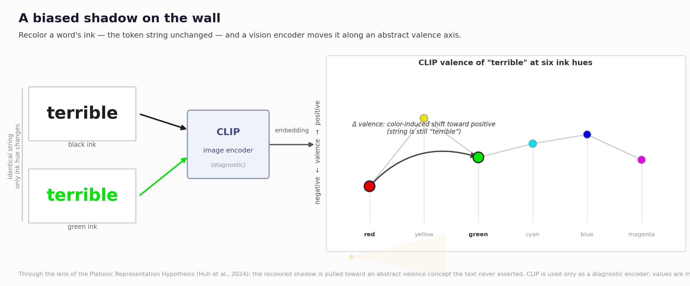
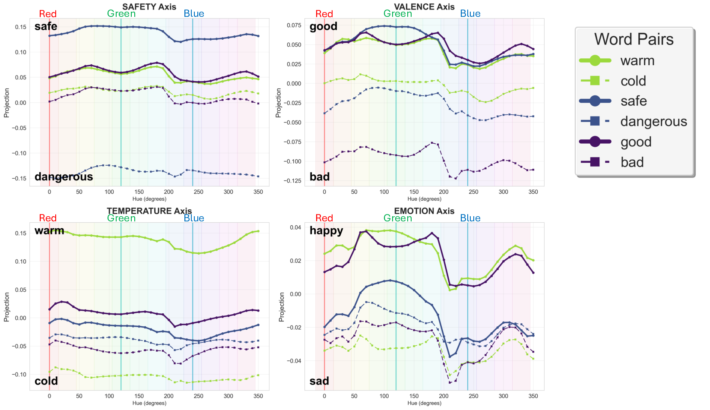

A note on what color bias says, and does not say, about representation convergence.
Why this note. A personal reading, not a formal result about PRH. My starting point was the Platonic Representation Hypothesis: if model representations become more aligned around a shared statistical structure of reality, how much of that structure tracks lexical content rather than visual presentation? Seeing Red, Thinking Bad studies a narrow instance: rendered text whose characters are fixed while color changes. I read the result as a boundary case for a strong presentation-invariance intuition, not a test of PRH.
In Seeing Red, Thinking Bad we render a sentence as an image and recolor one word (e.g., turning excellent green) without altering a single character. The string is identical; only the visual styling differs. Vision language models still shift their sentiment judgment, and a CLIP probe shows that sweeping a rendered word's hue moves its image embedding along interpretable semantic axes (valence, safety, emotion). The encoder treats color as an informative feature, although color carries no propositional meaning here.
This is not specific to one model. Cross-modal inconsistency is documented: vision language models answer the same content differently when it is presented as text tokens versus as text rendered inside an image (Cross-Modal Consistency in MLLMs, 2024; Same Content, Different Answers, 2025). The question we ask is narrower. If independently trained encoders are thought to converge on a shared, abstract account of the world, what does it mean that a presentation-level feature enters that account? We read our finding through the current debate on representational convergence.

The Platonic Representation Hypothesis (Huh, Cheung, Wang & Isola, 2024) argues that models trained with different data, objectives, and modalities may become increasingly aligned in representation space. I do not read our result as a refutation of that hypothesis.
The narrower issue is presentation invariance. A strong reading of convergence would suggest that, once the lexical content is fixed, incidental rendering choices such as hue should not substantially change where the input lands along semantic directions. Our result is a boundary case against that expectation: for text-as-image inputs, hue can move a rendered word along semantic directions while the string is unchanged. Color carries no propositional content in our constructed sentence; it does not change the characters or the truth-conditional meaning. It can, however, carry learned affective and cultural associations, and the encoder is demonstrably sensitive to color (Color in Visual-Language Models: CLIP deficiencies, 2025). That sensitivity is the point.
Recent work also makes the global form of convergence harder to maintain, and it indicates where a presentation-level feature can enter. Gröger, Wen & Brbić (2026) argue that global similarity scores can be inflated by model scale, and that after calibration the more stable signal is local neighborhood agreement rather than a shared global geometry. Koepke, Zverev, Ginosar & Efros (2026) scale the mutual-nearest-neighbor test to millions of samples and find that the apparent alignment becomes fragile, leaving mostly coarse semantic overlap. Their result is compatible with an Umwelt-style reading, but does not by itself study color or ecological niches. Hadgi et al. (2025) find that 3D/text alignment improves only after projecting representations onto carefully chosen low-dimensional subspaces, which appear to separate semantic and geometric factors.
None of these papers studies color. I use them only to locate our result: if convergence is partial and local, then presentation-level variables may still affect the local geometry of rendered text.
The probe is simple. We render a word $w$ in hue $h$ as an image $I_{w,h}$, encode it with a CLIP image encoder $f$, and project onto a bipolar semantic axis $u_a$ built from CLIP text embeddings $g$:
$$ s_a(w,h) = \big\langle f(I_{w,h}),\, u_a \big\rangle, \qquad u_a = \frac{g(\text{pos}) - g(\text{neg})}{\lVert g(\text{pos}) - g(\text{neg})\rVert}. $$For valence, $(\text{pos},\text{neg}) = (\text{good},\text{bad})$. The string $w$ is fixed and only $h$ varies, yet $s_a(w,h)$ moves systematically with hue.

The next two checks are small within-CLIP diagnostics, not part of the paper's main claims; they help read the interactive figure. First, color carries valence on its own: a blank color swatch projects more positive when green than when red, so the encoder treats color as a semantic signal. Second, coloring a word is not the addition of that color vector. Writing $\Delta_w(h) = f(I_{w,h}) - \bar f_w$ for a word's hue-variation and $P_C$ for the projector onto the pure-color direction, the overlap is small:
$$ \rho_w = \frac{\lVert P_C\,\Delta_w \rVert^2}{\lVert \Delta_w \rVert^2} \approx 0.08. $$Color largely reshapes how the specific word is represented, a color-by-word interaction. The hue trajectory is closed (cosine $\approx 0.99$ between $h{=}0$ and $h{=}360^\circ$) but spans roughly four to six dimensions, so it does not reduce to a flat ring. The interactive figure shows the same sweep (CLIP ViT-L/14-336).
A second frame makes the effect less surprising. The Umwelt Representation Hypothesis (Bosch, Sommers, Doerig & Kietzmann, 2026) argues that representational alignment reflects overlapping ecological constraints (environment, sensory apparatus, training statistics, objectives) rather than recovery of one global optimum. It cites cross-cultural color perception as evidence against universality. On this view the color-to-valence coupling is not a deviation from a Platonic ideal. It is a faithful imprint of CLIP's human-centric training data, in which color already carries learned affective and cultural meaning.
Both frames point to the same practical issue. Under a Platonic lens, the coupling marks a limit of presentation invariance. Under an Umwelt lens, it is not a bug but an imprint of the training niche. Under both, a presentation-level variable enters a semantic decision.
For practice, the effect is a reliability and safety concern: pipelines that read documents or interface screenshots can be influenced, benignly or adversarially, by styling that changes no words. A simple first defense is to compare the image-based answer with the answer from OCR-normalized text.
On scope: this note makes an interpretive claim, not a new theory of representation learning. The empirical claims are those in the paper. CLIP is used only as a diagnostic vision-language encoder; it is not a proxy for all VLM mechanisms, nor evidence that CLIP itself is a converged representation. The $0.08$ overlap and the four-to-six dimensions are within-CLIP diagnostics, not main claims. None of the convergence papers discussed here studies color bias; they provide a vocabulary for partial, local, or niche-dependent alignment, not evidence for it. Finally, "color" here means rendered appearance: the stimuli are implemented with RGB values for control, so telling human-like color appearance apart from device-level pixel statistics would need a dedicated, perceptually controlled study.